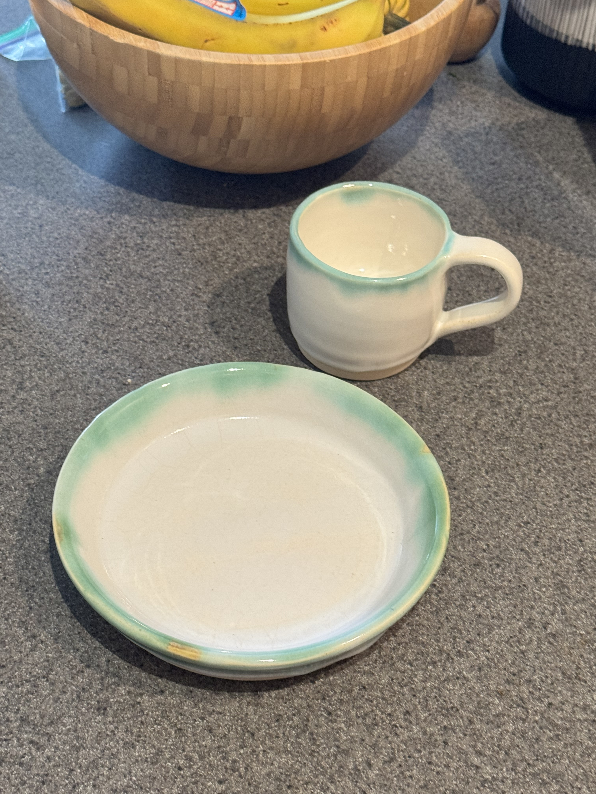

About Me
What I Do
I'm a Tech Lead on the Analytics team at Unite Us, where I work at the intersection of data and product strategy in health tech.
- Building SQL analyses and data models that drive product decisions
- Creating Tableau dashboards that make complex data accessible
- Translating data insights into actionable product strategy
- Recently completed a Data Science & Python course to expand my toolkit
Beyond the Data
When I'm not diving into datasets, you'll find me at the pottery wheel, exploring hiking trails, or adventuring around Brooklyn with Chiku (the best dog, no debate).
